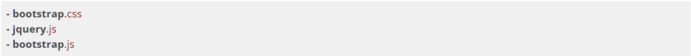
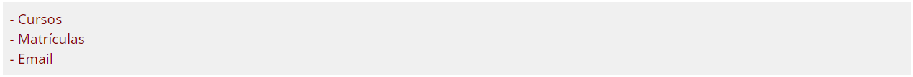

Para começar a usar o Bootstrap primeiro importe três arquivos importantes:

Depois abra a documentação do Bootstrap e procure pela estrutura exemplo de um header. Modifique para que o header contenha a logo da musicdot e que possua três links:

Dentro da tag <main> crie a estrutura de um Jumbotron e, assim como no header, modifique-o para que fique com os textos certos. No título do Jumbotron: "Escolher cursos" e no parágrafo abaixo do título: "Escolha os cursos que gostaria de se matricular". Para estilizar toda a página utilize as classes css necessárias que estão na documentação do Bootstrap.